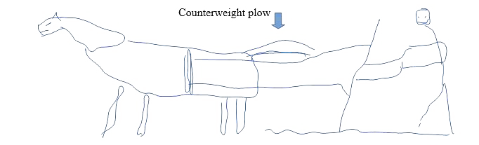

Mud was essential for early agriculture, particularly in the developing civilizations in Mesopotamia. The mud from the overflowing rivers of ther Tigris and Euphrates provided fertile soil, and also doubled as a pretty good material for buildings, such as warehouses, temples, and homes. Early Mesopotamians would cut the mud into bricks and dried them outside in the sun (in the future kilns were used). Once the mud bricks were in a usable form, they would be used for pretty much any building structure they needed. Mud (not the bricks) was also used for pottery, which were mainly used for containing grain and crops.
The Fertile Crescent was perfect for the cultivation of the versatile and hardy barley, which was used for wine, bread and cereal. The climate also suited the date palm, whose oil was used for a variety of things, ranging from preservative, to seasoning, to lubricant. ( ͡° ͜ʖ ͡°)
Back to topAlthough there were other areas that supported a similar range of crops, Mesopotamia thrived due to its excellent irrigation system. The Tigris and Euphrates rivers had natural rivulets that spread throughout the region. The inhabitants of the area simply improved upon what nature provided, creating complex systems of locks that moved water where and when they needed it.
Back to topMesopotamians created, or at least were the first to be known to use the counterweight plow.  The first animal to be domesticated was the dog, or rather the wolf, around 11,000 BCE. Modern dogs are selectively bred descendants of the first domesticated wolves. Humans simply chose to breed the wolves that looked nice to them, and that led to the species of dogs we have today. Some time after dogs came the domestication of other barnyard animals, such as donkeys, geese, ducks, chickens, pigs, and sheep. With all these animals for food, clothing, and protection, the idea of surplus was born.
Back to topHaving a surplus of food, or having more than what was necessary, humans had more free time than their ancestors. With this time, came the developmenmts of early civilizations. The first basic part of a civilization to come about was the city, a place of commerce, cultural diffusion, resources, and a political seat of power. Early examples include Catal Huyuk, Jericho, Ur/Uruk, and Babylon.
Back to topEarly cities had a central government that was in control of the organization, defense, commerce, and religion of its people. Specifically on the last bit, religion had already reached a fairly complex point by this time. Kings doubled as priests, the gateway to god for the common people. Because of this, there was basically no separation between church and state, they were regarded as the same, and the word of god was law.
Cities also were characterized by job specialization, another benefit of the surplus. Without needing everyone to be hunters or gatherers, people could choose to become good at one thing and be known for it. However, this specialization also led to the ideas of social classes and hierarchy. For the majority of ancient history, the hierarchy followed a pretty basic pattern, with peasants and slaves occupying the bottom, superceded by special/skilled workers, then nobles/rich/priests, then ultimately the king/priest-king.
The most important part of cities in relation to ancient history was the development of written language. Although it was initially used just for commercial purposes such as keeping track of inventory and past transactions, it evolved into a system of preserving histories and culture, allowing us to study civilizations from all those millenia ago.
Cities also saw the flourishing of art and architecture, which allowed people to express their beliefs and values, intimidate and/or impress their visitors, and also for the use of public works. The last category spanned a wide range, from roads, bridges and canals to schools, libraries and even primitive hospitals. Public works also encompassed the idea of safety through an army/police force.
Back to topA quick briefing on the Code of Hammurabi: It tells us that social class would determine the punishment for a criminal, i.e. the higher up you are, the less severe the punishment. It also tells us that ancient civilizations, at least those that followed the laws of Hammurabi, believed in personal accountability, that one must be responsible for their actions. The difference between ancient accountability and ours is that if you screwed up back then, you'd die.
Back to top